Solicitud recibida
Ya estamos revisando tu caso de calidad.
Un ingeniero de calidad revisará la información que compartiste para validar el siguiente paso.
01
Revisión del casoAnalizamos el reto, la ubicación, los tiempos y el alcance requerido.
02
Volver al inicio
Contacto de un especialistaTe ayudaremos a definir si una visita de diagnóstico es el siguiente paso.
Agenda el siguiente paso
Selecciona el horario que mejor te funcione